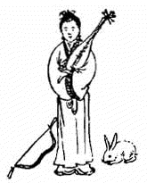
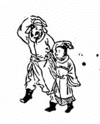
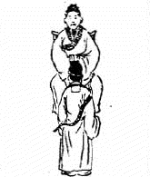
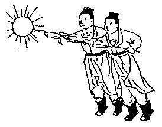
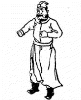
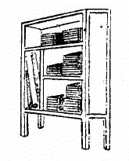
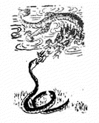
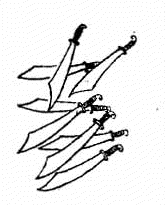
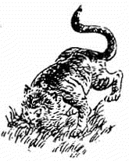

1. 41 甲辰 ䷝ 离下离上 火 1.1. 讖曰 1.2. 頌曰 1.3. 金聖歎 2. 42 乙巳 ䷷ 根下离上 旅 2.1. 讖曰 2.2. 頌曰 2.3. 金聖歎 3. 43 丙午 ䷱ 巽下离上 鼎 3.1. 讖曰 3.2. 頌曰 3.3. 金聖歎 4. 44 丁未 ䷿ 坎下离上 未济 4.1. 讖曰 4.2. 頌曰 4.3. 金聖歎 5. 45 戊申 ䷃ 坎下根上 蒙 5.1. 讖曰 5.2. 頌曰 5.3. 金聖歎 6. 46 己酉 ䷺ 坎下巽上 涣 6.1. 讖曰 6.2. 頌曰 6.3. 金聖歎 7. 47 庚戌 ䷅ 坎下乾上 讼 7.1. 讖曰 7.2. 頌曰 7.3. 金聖歎 8. 48 辛亥 ䷌ 离下乾上 同人 8.1. 讖曰 8.2. 頌曰 8.3. 金聖歎 9. 49 壬子 ䷁ 坤下坤上 地 9.1. 讖曰 9.2. 頌曰 9.3. 金聖歎 10. 50 癸丑 ䷗ 震下坤上 复 10.1. 讖曰 10.2. 頌曰 10.3. 金聖歎 1. 41 甲辰 ䷝ 离下离上 火 1.1. 讖曰 天地晦盲 草木蕃殖 阴阳反背 上土下日 1.2. 頌曰 帽儿须戴血无头 手弄乾坤何日休 九十九年成大错 称王只合在秦州 1.3. 金聖歎 「此象一武士擅握兵权，致肇地覆天翻之祸，或一白姓者平之。」 2. 42 乙巳 ䷷ 根下离上 旅 2.1. 讖曰 美人自西来 朝中日渐安 长弓在地 危而不危 2.2. 頌曰 西方女子琵琶仙 皎皎衣裳色更鲜 此时浑迹居朝市 闹乱君臣百万般 2.3. 金聖歎 「此象疑一女子当国，服色尚白，大权独揽， 几危社稷，发现或在卯年，此始乱之兆也。」  3. 43 丙午 ䷱ 巽下离上 鼎 3.1. 讖曰 君非君 臣非臣 始艰危 终克定 3.2. 頌曰 黑兔走入青龙穴 欲尽不尽不可说 惟有外边根树上 三十年中子孙结 3.3. 金聖歎 「此象疑前象女子乱国未终，君臣出狩，有一杰出之人为之底定，然必在三十年后。」  4. 44 丁未 ䷿ 坎下离上 未济 4.1. 讖曰 日月丽天 群阴慑服 百灵来朝 双羽四足 4.2. 頌曰 而今中国有圣人 虽非豪杰也周成 四夷重译称天子 否极泰来九国春 4.3. 金聖歎 「此象乃圣人复生，四夷来朝之兆，一大治也。」  5. 45 戊申 ䷃ 坎下根上 蒙 5.1. 讖曰 有客西来 至东而止 木火金水 洗此大耻 5.2. 頌曰 炎运宏开世界同 金乌隐匿白洋中 从今不敢称雄长 兵气全销运已终 5.3. 金聖歎 「此象于太平之世复见兵戎，当在海洋之上，自此之后，更臻盛世矣。」  6. 46 己酉 ䷺ 坎下巽上 涣 6.1. 讖曰 黯黯阴霾 杀不用刀 万人不死 一人难逃 6.2. 頌曰 有一军人身带弓 只言我是白头翁 东边门里伏金剑 勇士后门入帝宫 6.3. 金聖歎 「此象疑君王昏瞶，一勇士仗义兴兵为民请命，故曰万人不死一人难逃。」  7. 47 庚戌 ䷅ 坎下乾上 讼 7.1. 讖曰 偃武修文 紫微星明 匹夫有责 一言为君 7.2. 頌曰 无王无帝定乾坤 来自田间第一人 好把旧书多读到 义言一出见英明 7.3. 金聖歎 「此象有贤君下士，豪杰来归之兆，盖辅助得人，而帝不居德， 王不居功，蒸蒸然有无为而治之盛。此一治也。」  8. 48 辛亥 ䷌ 离下乾上 同人 8.1. 讖曰 卯午之间 厥象维离 八牛牵动 雍雍熙熙 8.2. 頌曰 水火既济人民吉 手执金戈不杀贼 五十年中一将臣 青青草自田间出 8.3. 金聖歎 「此象疑一朱姓与一苗姓争夺朝纲，而朱姓有以德服人之化， 龙蛇相斗，想在辰巳之年，其建都或在南方。」  9. 49 壬子 ䷁ 坤下坤上 地 9.1. 讖曰 山谷少人口 欲剿失其巢 帝王称弟兄 纷纷是英豪 9.2. 頌曰 一个或人口内啼 分南分北分东西 六爻占尽文明见 棋布星罗日月齐 9.3. 金聖歎 「久分必合，久合必分，理数然也，然有文明之象，当不如割据者之纷扰耳。」  10. 50 癸丑 ䷗ 震下坤上 复 10.1. 讖曰 水火相战 时穷则变 贞下起元 兽贵人贱 10.2. 頌曰 虎头人遇虎头年 白米盈仓不值钱 豺狼结队街中走 拨尽风云始见天 10.3. 金聖歎 「此象遇寅年必遭大乱，君昏臣暴，下民无生息之日，又一乱也。」 